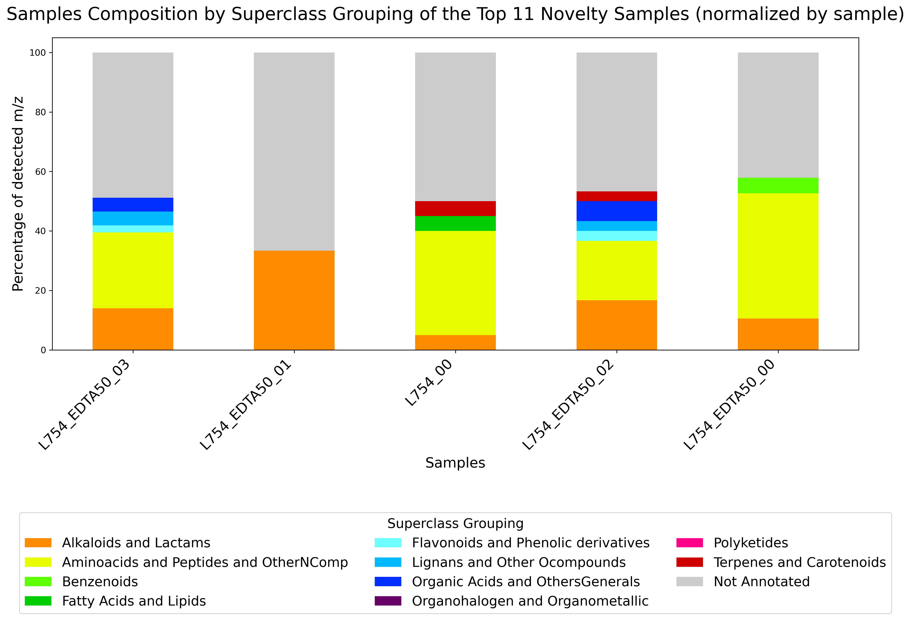
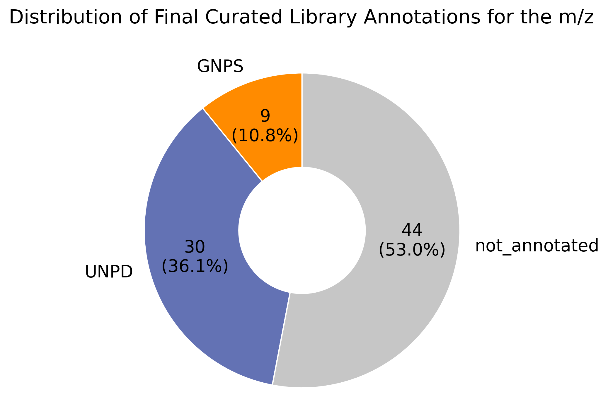
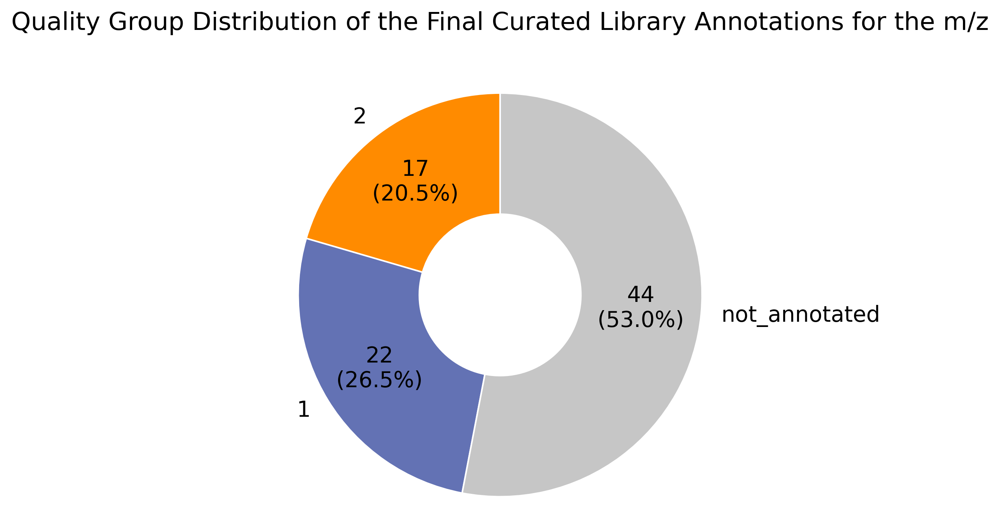
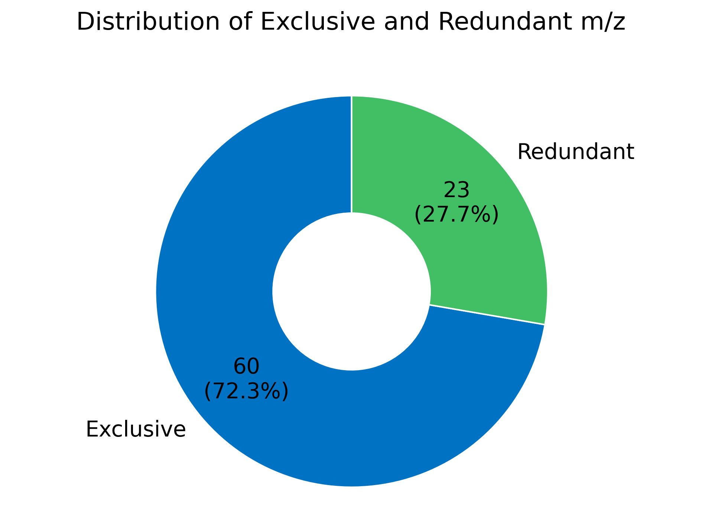
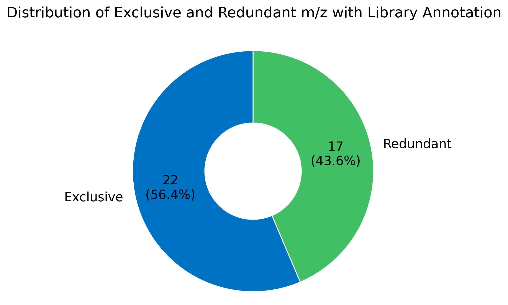
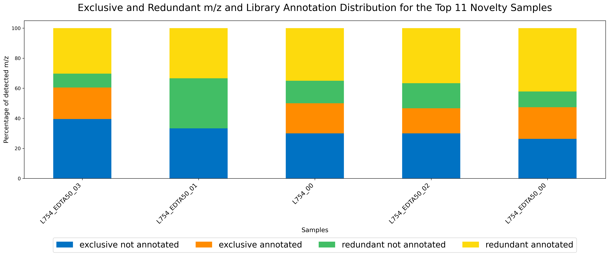

Command post_dd_analysis
This command perform a post-processing analysis of a NP³ result for drug discovery research. Six different visualizations and two data tables are created. The visualization focus on the superclass grouping distribution, the novelty of the m/z (with or without a final curated library annotation within a quality group) and the novelty across samples (with redundant and/or exclusive m/z).
The final curated library annotations that are used for the plots depends on the lib_annotation_quality_filter
parameter value. This will filter as annotated only the m/z with a final identification annotation in the selected
quality group, default to 1 (only the good annotations, with a high score >= 50 in the final curation).
A distribution plot of the quality filter of the final curated library annotations is also created.
The analysis may be filtered to show only a subset of the samples (using the provided metadata table) or the top
novelty samples distribution (topk parameter) and/or only the protonated m/z (use\_protonated parameter).
Parameters
For the complete list of parameters run:
Parameters for the command post_dd_analysis:
- -c, --clean_counts_path <path> : Path to the clean counts table file with peak area of the NP³ job to be post analysed, the same of the metadata. The prefix of its filename will be used to name the output files.
- -m, --metadata_path <path> : Path to the metadata file of the same NP³ job to be post analysed, with its set of samples. It may contain the complete metadata or just a selection of the original samples, which will be used to filter the final plots and tables by sample. This filtering does not affect the metrics computations, its only for visualization purposes. The metadata filename will be used to name the output files.
- -o, --output_path <path> : Path to the output directory where the plots and tables of the post analysis will be stored. If the output_path does not exists, it will be created. If it already exists, the created plots and tables with the same name will be overwritten.
- -k, --topk [value] : The number of samples to be selected and filtered in the plots with the top count of exclusive and not annotated m/z - top novelty samples. If None or 0, disable filtering. This filtering does not affect the metrics computations, its only for visualization purposes. (default: "None")
- -p, --use_protonated [value] : True of False defining if only the putative [M+H] m/z should be used in the output tables and plots (filter the table with protonated_representative == 1). This will affect the metrics computation. (default: "False")
- --rm_blanks [value] : True or False to allow removing blank samples and m/z from the metrics computation. (default: "True")
- --rm_beds [value] : True or False to allow removing culture media samples and m/z from the metrics computation. (default: "True")
- --rm_controls [value] : True or False to allow removing control samples and m/z from the metrics computation. (default: "False")
- --superclass_grouping_column [value] : The name of the column in the provided clean table that should be used to get the superclass grouping values of the m/z. The final curated library annotation result is used by default (best origin from UNPD and GNPS). (default: "curated_lib_annotation_superclass_grouping")
- --lib_annotation_quality_filter [value] : Set the quality group filter of the final curated library annotations, one of 1 or 2. If 1, only consider as annotated the m/z with "curated_lib_annotation_quality" == 1; otherwise if 2, consider as annotated the m/z with "curated_lib_annotation_quality" equals 1 or 2. The rest is set as "not_annotated". (default: "1")
- --donutplots_title_size [value] : The title size of the donut plots. (default: "16")
- --donutplots_text_size [value] : The axis and legend text sizes of the donut plots. (default: "14") --donutplot_libAnnotations_colors [value] : The list of colors separated by comma for the library annotation distribution donut plot. Three colors are expected for 'GNPS', 'UNPD' and 'not_annotated' categories. Or None to use the default coloring of matplotlib. (default: "#ff8b00,#6372b4,#c6c6c6")
- --donutplot_mzs_distr_colors [value] : The list of colors separated by comma for the m/z occurrence distribution donut plot. Two colors are expected for 'Exclusive' and 'Redundant' categories. Or None to use the default coloring of matplotlib. (default: "#0072c3,#42be65")
- --mzs_barplot_figsize [value] : The x,y figure size of the m/z occurrence distribution in a stacked bar plot by sample. Two integer values separated by comma. (default: "18,8")
- --mzs_barplot_label_size [value] : The axis label size of the m/z occurrence distribution in a stacked bar plot by sample. (default: "13")
- --mzs_barplot_title_size [value] : The title size of the m/z occurrence distribution in a stacked bar plot by sample. (default: "20")
- --mzs_barplot_legend_bbox [value] : The x,y anchoring coordinates relative to the plot area of the m/z occurrence distribution in a stacked bar plot by sample. Two float values separated by comma. (0, 0) is the bottom-left corner of the plot. (1, 1) is the top-right corner of the plot. Values smaller than 0 or greater than 1 will place the legend completely outside the plot area. (default: "0.5,-0.2")
- --mzs_barplot_legend_fontsize [value] : The legend font size of the m/z occurrence distribution in a stacked bar plot by sample. (default: "17")
- --mzs_barplot_legend_ncol [value] : The number of columns to display the legends of the m/z occurrence distribution in a stacked bar plot by sample. (default: "4")
- --mzs_barplot_colors [value] : The list of colors of the m/z occurrence distribution in a stacked bar plot by sample. Four colors are expected for 'exclusive not annotated', 'exclusive annotated', 'redundant not annotated' and 'redundant annotated' m/z categories. If None, use the default matplotlib coloring. (default:"#0072c3,#FF8C00,#42be65,#FDDA0D")
- --superclass_barplot_figsize [value] : The x,y figure size of the superclass distribution in a stacked bar plot by sample. Two integer values separated by comma. (default: "20,10")
- --superclass_barplot_label_size [value] : The axis label size of the superclass distribution in a stacked bar plot by sample. (default: "16")
- --superclass_barplot_title_size [value] : The title size of the superclass distribution in a stacked bar plot by sample. (default: "20")
- --superclass_barplot_legend_bbox [value] : The x,y anchoring coordinates relative to the plot area of the superclass distribution in a stacked bar plot by sample. Two float values separated by comma. (0, 0) is the bottom-left corner of the plot. (1, 1) is the top-right corner of the plot. Values smaller than 0 or greater than 1 will place the legend completely outside the plot area. (default: "0.5,-0.15")
- --superclass_barplot_legend_fontsize [value] : The legend font size and title size of the superclass distribution in a stacked bar plot by sample. (default: "15")
- --superclass_barplot_legend_ncol [value] : The number of columns to display the legends of the superclass distribution in a stacked bar plot by sample. (default: "4")
- -h, --help : output usage information
Results
Six visualizations are created in the output_path directory:
- A barplot with the samples composition in terms of the superclass grouping distribution across the detected m/z with
a final curated library annotation (
superclass_grouping_column);
- A donut plot with the count of final curated library annotations by origin for the m/z in the selected quality group
(
lib_annotation_quality_filter);
- A donut plot with the quality group distribution of the final curated library annotations for the m/z;

- A donut plot with the m/z novelty across all selected samples - total count of redundant and
exclusive m/z;

- Another donut plot with the library annotated m/z novelty across all selected samples within the selected quality of
the final curated library annotations (
lib_annotation_quality_filter);
- A barplot with the m/z samples novelty (redundant or exclusive) distribution with and without a final curated library
annotation by sample.

And two CSV tables are created with the count of m/z novelty by sample and the count of superclass grouping by sample.
All the output plots and tables are named with a prefix equal the output_name (extracted from the clean table)
concatenated with the metadata filename. The provided superclass_grouping_column parameter value is also used for
naming plot (1).
Examples
Example to execute the post-processing drug discovery analysis command:
node np3_workflow.js post_dd_analysis -m /path/to/the/np3/job/metadata.csv
--clean_counts_path /path/to/np3/result/outs/count_tables/clean/clean_count_peak_area.csv
--output_path "/path/to/the/output/directory/"
Example to create the analysis plots with the top 5 novelty samples and only [M+H]+ m/z:
node np3_workflow.js post_dd_analysis -m /path/to/the/np3/job/metadata.csv
--clean_counts_path /path/to/np3/result/outs/count_tables/clean/clean_count_peak_area.csv
--output_path /path/to/the/output/directory/ --topk 5 -p True
Details
The provided metadata table may be used to filter the final plots and display only a subset of the original samples.
This will not modify the metrics, only the visualization of the data is modified. This may be useful for middle to big
datasets with more than 50 samples, for which the complete view is not clear.
The top k parameter may also be used to filter the final view, in this case the most novelty samples - the ones with more exclusive and not library annotated m/z - are selected for the final plots.
The samples novelty here is measured by the amount of m/z that were not present/identified in any library search after the final curation and quality filter - not annotated - and the amount of m/z that were not detected in other samples - which are exclusive to a respective sample.
This post-processing computes the m/z distribution occurrence by sample to create the plots (2),(3),(4),(5) and (6) of the results, it calculates the following metrics by sample:
- number of exclusive m/z: only appear in one sample;
- number of redundant m/z: appear in more than one sample;
- number of annotated m/z: received a library identification from GNPS or UNPD in the final curation (column curated_lib_annotation_origin) and passed the quality filter (parameter lib_annotation_quality_filter);
The plot (1) is created by computing the provided superclass grouping distribution by sample. For this, the groups
present in the column provided in the parameter superclass_grouping_column are counted by sample by checking the
presence of their respective m/z in the valid samples, grouping their occurrence by the superclass groups and summing
their counts by sample, any missing group will receive a value equals to zero. This will result in the percentage of
detected m/z by annotated superclass group in the superclass_grouping_column for each sample.
There are different parameters to personalize the final plots with different text sizing and legend organization and position, the users may change the default values according to their needs.